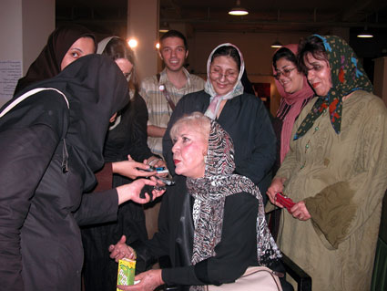
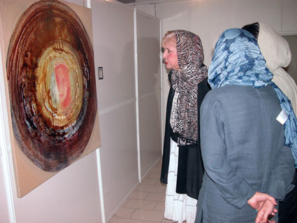

|
|

نمایشگاه نقاشی «همه مادران من » در فرهنگسرای بهمن، 4 تا14
سیمین بهبهانی : کوشش شما هیچ وقت نادیده نمیماند
دو شنبه5 شهریور 1386

چهار شهریور ماه، نمایشگاه نقاشی با عنوان «همه مادران من» همزمان با سالگرد کمپین یک میلیون امضا با آثار 33 هنرمند نقاش در فرهنگسرای بهمن افتتاح شد. این نمایشگاه به مدت 10 روز در این نگارخانه دائر است، 3 روز اول همراه با کارگاه نقاشی برای مخاطبان نمایشگاه است، برای موضوعات کارگاه نقاشی تم های زیر انتخاب شده است:
1- حضانت فرزندان را به مادران بسپارید
2- من مساوک نصف 1=1+1
3- سلطان غم، مادر
4- ناموس
5- مادربهتر است یا عمو؟
6- ما در پیاله عکس رخ یار دیده ایم
7- گویند مرا چو زاد مادر
8- اول بگو شام چی داریم؟
در روز افتتاح نمایشگاه سیمین بهبهانی بانوی جنبش زنان ایران برای همدلی با زنان در نمایشگاه حضور یافت. سیمین بهبهانی در حالی که مشتاقان ایشان دورتا دورش را گرفته بودند در گفتگو با خبرنگاران به سوال های آنان پاسخ داد.

او درباره ارتباط بین هنر و ادبیات زنان و مسائل اجتماعی زنان گفت :« هنر یکی از وسایل تلطیف روحیه، از وسایل رساندن پیام به مردم وایجاد همبستگی است. شاد کننده است. یک زن هنرمند هیچ وقت تنها نمی ماند زیرا با هنرش میتواند تاثیر زیادی بر اعضا و فضای خانواده بگذارد.»
وی رو به زنان هنرمندی که آثارشان را درنمایشگاه ارائه کرده بودند گفت :« شما باید به جامعه امیدواری بدهید، پیام خود را به جامعه بدهید همه اینها کارهایی است وظیفه شما است وبزرگترین وظیفه شما پرداختن به هنر ناب است چون بزرگترین کار هنر ناب نفوذ در جامعه است.»
وی در پاسخ به این سوال که هنرچه تاثیری بر انعکاس نابرابری و تلاش برای رفع آن دارد گفت :« هنر اصلاً موقعی بوجود آمد که تمدن بوجود آمد وقتی بشر حس کرد که زنده است و می خواهد زندگی کند هنرهم بوجود آمد. یعنی هنرمند از همان زمان تلاش می کند که از طریق هنرش با دیگران ارتباط برقرار کند. »
به اعتقاد هنر میتواند در پیشبرد اهداف کمپین یک میلیون امضا نیز تاثر گذار باشد:« شما می توانید با نشان دادن این تابلوها، توجه مردم را جلب بکنید و به آنها نشان دهید که چه می خواهید. چرا این همه زحمت می کشید و چرا برای زندگی بهترتلاش می کنید. آن وقت حتماً با شما همدلی خواهند کرد و بیانیه کمپین را هم امضا خواهند کرد.»
سیمین بهبهانی درباره نمایشگاه گفت:« وقتی وارد نمایشگاه شدم فکرکردم که وارد یکی از غرفه های بهشت شده ام برای اینکه وقتی این همه زنان جوان و دختران جوان با عشق و علاقه تمام در چنین شرایط دشواری توانسته اند چنین نمایشگاهی را برگزار کردند درواقع بزرگترین پیروزی را از آن خود کرده اند. کوشش شما هیچ وقت نادیده نمیماند. من اول که وارد شدم اولین کلمه ای که گفتم تبریک بود یعنی پیروزی شما را تبریک گفتم.
این نمایشگاه به کوشش همه هنرمندانی برگزارشده است که با ارائه اثر خود در طرح مسائل اجتماعی در هنرشان تلاش کرده اند. رزیتا شرف جهانی ازهماهنگ گنندگان برگزاری این نمایشگاه درباره دلایل برگزاری نمایشگاه گفت :« مدتها بود که موضوعات اجتماعی موضوعاتی بود که ما طی دوره یک ساله به آن فکر می کردیم، هر کسی جدا جدا با موضوعات اجتماعی نمایشگاه برگزار می کرد و ما تصمیم گرفتیم که همه را جمع کنیم و این نمایشگاه را برگزار کنیم. اول به مسائل زنان و به ویژه مادران و حقوق آنان فکر کردیم. مسئله ای که بیشتر مادران با آن رو به رو هستند حضانت کودکان است ، مسئله ملموسی است و همه هنرمندان هم دراین زمینه کار کرده اند. به همین دلیل موضوع مادران را انتخاب کردیم که همزمانی اش با موضوع سالگرد کمپین یک میلیون امضا موازی با بحث حقوق زنان شد.»
منصوره شجاعی نیز از دیگر همکاران این نمایشگاه گفت:« وقتی به بررسی قوانین تبعیض آمیز پرداختیم تبعیض آمیز بودن قانون حضانت به رغم اصلاحاتی که در آن صورت گرفته بیشتر به چشم می آید و برای زنان و مادران و حتی کودکان ملموس هست. بنابراین احساس کردیم این مسئله به مسئله زنان و مادران بیشتر نزدیک است. همه ما زنان برای ارتقای حقوق زنان و طرح مسائل اجتماعی زنان تلاش می کنیم اما به نظرمی آید خیلی از فعالیت هایمان چون چون جزیره های سرگردان جدا جدا صورت می گیرد، ایجاد هماهنگی برای برگزاری برنامه هایی مشترک همه ما را دورهم جمع می کند. »